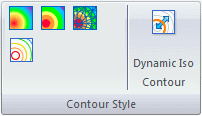
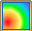
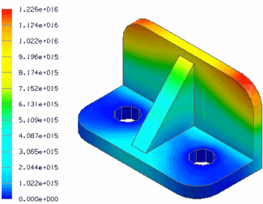
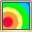
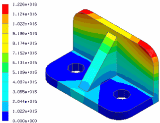
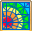
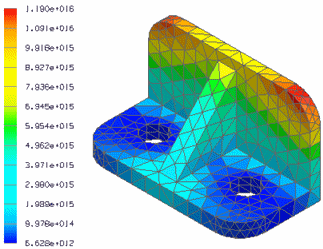
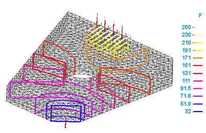
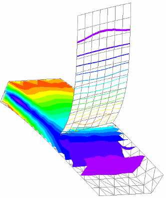
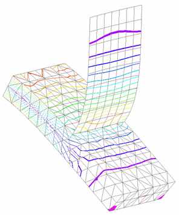

Contour styles
Choosing a plot contour style
Contour style determines how the result colors are displayed on the results plot. You can choose among these contour styles:

Selecting the contour style button applies the contour to the model results.
The contour styles are visible only when the Show group→Display Options command  →Contour option is selected.
→Contour option is selected.
In addition to choosing a contour style, you can select the color spectrum to display on the results plot. You also can change the scale, numeric format, and more. To learn more, see: Using the color bar.
Smooth contour shading

displays a continuous range of colors that indicate the value of the plotted results.
Banded contour shading

displays distinct color bands of color corresponding to the number of levels in the color bar.
Element contour shading

displays results per element, with each color corresponding to a value.
Iso contours
 displays iso line or iso surface contours on the model, with each contour representing
a constant result value. The color bar displays the result value at the end of each
color level. The number of levels (the number of lines or surfaces) displayed on the
model is controlled by the Color Bar tab→Colors group→Levels option.
displays iso line or iso surface contours on the model, with each contour representing
a constant result value. The color bar displays the result value at the end of each
color level. The number of levels (the number of lines or surfaces) displayed on the
model is controlled by the Color Bar tab→Colors group→Levels option.
-
Iso lines—Iso lines are displayed by default when you select the Iso Contour command. Iso line contours aid in understanding result value distributions on the surface of your model. You can display iso lines on models with solid bodies and on models with plates that are meshed with a surface mesh.

-
Iso surfaces—Iso surface contours show result distributions inside your model. You can display iso surfaces on models with elements meshed with a tetrahedral mesh, a mixed mesh, or a surface mesh.

Iso contour plots are not available for structural frame models using the beam mesh type.
The iso contours that you see are based on the mesh type and on the following options:
- Generate only Surface results (faster)
-
This option in the Create Study (or Modify Study) dialog box applies to models with tetrahedral meshes and mixed meshes. When deselected, iso surfaces are generated and can be displayed. When selected, iso lines are displayed.
The following options are in the Simulation Results environment, on the Home tab→Show group→Display Options list:
- Surfaces in Iso Contour
-
This option displays iso surfaces on a model with a tetrahedral or mixed mesh.
- Plate Thickness
-
This option applies to models with surface meshes, general bodies, and mixed meshes. When selected, iso surfaces are displayed. When deselected, iso lines are displayed.
-
In a mixed mesh study, the iso surface contours are displayed on bodies with a tetrahedral mesh, and iso lines are displayed on surfaces with a surface mesh, unless you also display the plate thickness.
-
Plate Thickness=Off
Surfaces in Iso Contour=On

-
-
In a mixed mesh study, iso lines are displayed on all bodies when the plate thickness and the iso surfaces are not shown.
Plate Thickness=Off
Surfaces in Iso Contour=Off

Dynamic iso contours
 shows the cross section of a particular temperature by dynamically moving an iso
contour line or an iso contour surface through the model. This is useful for visualizing
the extent of each iso contour color level with its corresponding result value.
shows the cross section of a particular temperature by dynamically moving an iso
contour line or an iso contour surface through the model. This is useful for visualizing
the extent of each iso contour color level with its corresponding result value.
The surface that is moved depends on the loads and constraints applied. It also depends on which type of plot you are viewing.
Conversely, you can enter a value on the Dynamic Iso Contour command bar to display the iso contour that matches it.

To learn how, see Use dynamic iso contours.